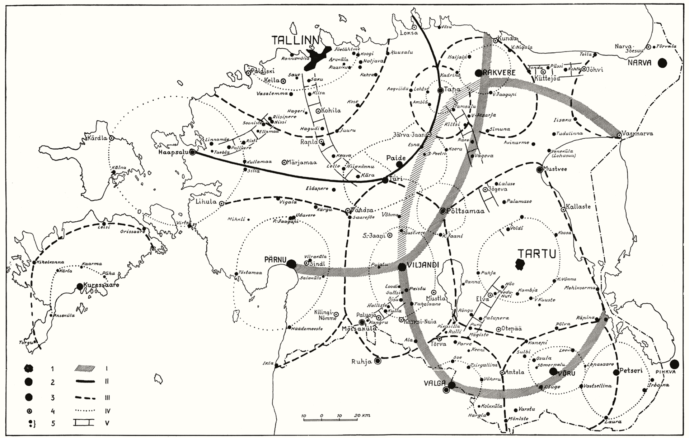

Introduction
SPATIAL DEVELOPMENT IN ESTONIA
Põhisõnumid
- Estonia has advanced to 30th position in the world in terms of human development, but has since stalled.
The well-being of the Estonian population has improved remarkably compared to other countries in the world. Domestically, social inequality between regions is deepening.
- Estonia’s metropolisation is reflected in the continued growth of the Greater Tallinn urban area, where people, economic activity and services are concentrating, while the rest of Estonia is shrinking.
For Estonia as a whole, metropolisation creates an imbalance in terms of statehood, governance, the economy, and the quality of life, space and the environment. It is time to require urban policy-making, time to create a national framework and targeted measures based on actual urban areas, rather than administrative city boundaries.
- The multilocality of Estonians connects Tallinn with the counties, and the cities with rural areas.
People’s expanding daily activity spaces and the recent administrative reform have led to a dilution of spatial identity. A lifestyle and infrastructure based on car use allows people to operate simultaneously in the city and the countryside. Multilocality, or living in more than one place, due to labour migration, country homes, networks of families and friends, study and leisure requires more flexible spatial planning and administrative arrangements.
- Public debate results in a better living environment and greater consensus.
The development of deliberative skills is in the national interest. More effective, transparent and feedback-based modes of public participation are needed to promote participatory democracy. Digital platforms, a media space based on analytical argumentation, a competent civil service and reliable experts all contribute to this, ensuring the exchange of knowledge and building mutual trust between the state and its citizens.
- Built heritage and natural areas as part of Estonian culture strengthen people’s relationship with the environment and their sense of belonging.
A diverse living environment requires the protection of built heritage based on the principles of sustainable development, combined with an investment plan that ensures the preservation, utilisation and management of buildings of national importance. Estonians’ environmental awareness is undergoing rapid and sharp changes, which explains the social confrontations over the use of natural areas in recent years. More targeted planning of natural areas and better management of visits to nature helps to improve the health of urban populations and maintain their contact with nature.
In his speech on the 78th anniversary of the Republic of Estonia on 24 February 1996, President Lennart Meri declared:
‘Where do Estonia’s strengths lie? Estonia’s strength is [that it] is exactly where it is; that it is precisely the size it is.’
The total land area of Estonia is exactly 43,465 sq. km (Land Board 2020). The Estonian territory – the land, geographical places, their use and usefulness, the cities, towns and villages as well as its natural environment – is a national asset. It is here, in this ‘space’, to use academic parlance, that Estonia exists and develops. The Estonian Human Development Report 2019/2020 focuses on the spatial development of Estonia in terms of social processes and processes affecting the well-being of the Estonian people. The fundamental question of this report is how to recreate and enhance spatial diversity, quality and balance in Estonia in a way that is democratic and serves the interests of society as a whole.
In the five chapters that follow, we approach the concept of space as broadly as possible – on different scales and in the different senses of the term. We extend the concept geographically to cover the whole of Estonia, looking at the settlement structure, natural areas, urban space, including urban design, and the deliberative space that connects us. We also describe the health of Estonian democracy as it undergoes spatial change, from the perspective of sustainable development and social cohesion, emphasising the importance of the co-creation of habitable space that is human-friendly and on a human scale. Therefore, space as the umbrella term for this report refers to the common space that serves the public interest and provides public goods.
Several articles in the report raise the issue of democratic spatial relations in the public sphere, where the public interest clashes with individual and private interests. How public is public space? This question has arisen sharply in Estonian society in recent years, in connection with the planning of urban space as well as industrial facilities, apartment buildings, roads and other structures, and also in connection with deforestation and the opportunities for spending time in nature. Indeed, we can understand public space by contrasting it with private (or privatised) space. Although 40% of Estonia’s land is state-owned and 1% is owned by local governments, public access to this space is limited, for example, in the case of national defence lands. The public interest may also concern the 59% of the Estonian territory that is private property.
Space itself affects people’s lives and behaviour, and shapes the way we think at both the collective and individual level.
Space plays an important role in shaping social processes. The use and design of public space, including privately owned public space, reflects how society is organised. The more open and democratic the society, the better the opportunities for participation in shaping space and the more transparent the spatial decisions. Space itself affects people’s lives and behaviour, and shapes the way we think at both the collective and individual level. Moreover, the nature of public space has changed substantially in recent decades. As well as historical and textual narratives, the cultural space is made up of physical space as a medium for national self-description. Therefore, the digital deliberative space can serve as an extension of the town square or village green. Public digital and physical space are closely intertwined, creating the effect of time-space compression – digitally, we can be in several spaces at the same time.
Estonia has advanced to 30th position in the world in terms of human development, but has since stalled
According to the Human Development Index introduced by the United Nations Development Programme in 1990, Estonia qualifies among countries with very high human development. Estonia ranks 30th with an index of 0.882 and has remained in that position for the past six years (Table 0.1). The index takes into account life expectancy, mean years of schooling and GNI per capita at constant prices. Estonian residents have an average life expectancy of 78.6 years, which is 3 years less than the European Union average. Life expectancy depends on several factors: the environment, access to healthcare, people’s standard of living and health awareness. In Estonia, life expectancy is higher in urban areas, among ethnic Estonians and the more highly educated population (Statistics Estonia 2018). Education continues to be highly valued and respected. Globally, students receive more years of schooling only in Switzerland, the United States and Canada.
The improvement in well-being has been significant and inspired the slogan ‘Estonia has never done as well as it is doing today’. More important than measurement and indexing systems, however, are data quality and the depth with which the data is studied. A chain is only as strong as its weakest link; in other words, the population is as prosperous as the most financially vulnerable social groups. According to Statistics Estonia, 284,300 (21.7%) Estonians lived at risk of poverty and 31,400 (2.4%) in absolute poverty in 2019. About half of the elderly population experience risk of poverty. While the share of the population at risk of poverty has decreased slowly but steadily in recent years, the difference between the richest and poorest fifth of the population has not changed since 2017. Not all social groups, let alone all regions, have benefited from the increase in well-being. Differences in average life expectancy, educational levels and income are regional and also related to the state of the environment (see e.g. National Health Plan 2020–2030).
In the first decades of this century, the world has seen a rapid rise in the standards of living due to the successful fight against disease, hunger and poverty. But today the world faces a new wave of inequality, and inequality as the biggest obstacle to human well-being is also at the heart of the global Human Development Report published in late 2019. The report is framed by a forward-looking message that two new global trends have emerged over the past decade which are affecting people’s well-being around the world: access to technology and climate change. The success stories in technology, such as artificial intelligence and machine learning, are widening the gap with populations and countries that do not have the capacity to keep up with technological development. The climate crisis is already hitting the world’s poorest regions and vulnerable groups harder. Climate change is expected to cause 250,000 additional deaths a year from malnutrition, malaria, diarrhoea and heat stress between 2030 and 2050 (United Nations 2019).
Table 0.1 Human Development Index and its components in selected countries (2018)
| HDI rank | Country | Human Development Index value | Life expectancy at birth (y) | Expected years of schooling | Mean years of schooling | Gross national income per capita (2011 PPP $) |
|---|---|---|---|---|---|---|
| 1 | Norway | 0,954 | 82,3 | 18,1 | 12,6 | 68 059 |
| 2 | Switzerland | 0,946 | 83,6 | 16,2 | 13,4 | 59 375 |
| 3 | Ireland | 0,942 | 82,1 | 18,8 | 12,5 | 55 660 |
| 4 | Germany | 0,939 | 81,2 | 17,1 | 14,1 | 46 946 |
| 4 | Hong Kong, China (SAR) | 0,939 | 84,7 | 16,5 | 12 | 60 221 |
| 6 | Australia | 0,938 | 83,3 | 22,1 | 12,7 | 44 097 |
| 6 | Iceland | 0,938 | 82,9 | 19,2 | 12,5 | 47 566 |
| 8 | Sweden | 0,937 | 82,7 | 18,8 | 12,4 | 47 955 |
| 9 | Singapore | 0,935 | 83,5 | 16,3 | 11,5 | 83 793 |
| 10 | Netherlands | 0,933 | 82,1 | 18 | 12,2 | 50 013 |
| 11 | Denmark | 0,93 | 80,8 | 19,1 | 12,6 | 48 836 |
| 12 | Finland | 0,925 | 81,7 | 19,3 | 12,4 | 41 779 |
| 13 | Canada | 0,922 | 82,3 | 16,1 | 13,3 | 43 602 |
| 14 | New Zealand | 0,921 | 82,1 | 18,8 | 12,7 | 35 108 |
| 15 | United Kingdom | 0,92 | 81,2 | 17,4 | 13 | 39 507 |
| 15 | United States | 0,92 | 78,9 | 16,3 | 13,4 | 56 140 |
| 17 | Belgium | 0,919 | 81,5 | 19,7 | 11,8 | 43 821 |
| 18 | Lichtenstein | 0,917 | 80,5 | 14,7 | 12,5 | 99 732 |
| 19 | Japan | 0,915 | 84,5 | 15,2 | 12,8 | 40 799 |
| 20 | Austria | 0,914 | 81,4 | 16,3 | 12,6 | 46 231 |
| 21 | Luxembourg | 0,909 | 82,1 | 14,2 | 12,2 | 65 543 |
| 22 | Isreal | 0,906 | 82,8 | 16 | 13 | 33 650 |
| 22 | Korea (Republic of) | 0,906 | 82,8 | 16,4 | 12,2 | 36 757 |
| 24 | Slovenia | 0,902 | 81,2 | 17,4 | 12,3 | 32 143 |
| 25 | Spain | 0,893 | 83,4 | 17,9 | 9,8 | 35 041 |
| 26 | Czechia | 0,891 | 79,2 | 16,8 | 12,7 | 31 597 |
| 26 | France | 0,891 | 82,5 | 15,5 | 11,4 | 40 511 |
| 28 | Malta | 0,885 | 82,4 | 15,9 | 11,3 | 34 795 |
| 29 | Italy | 0,883 | 83,4 | 16,2 | 10,2 | 36 141 |
| 30 | Estonia | 0,882 | 78,6 | 16,1 | 13 | 30 379 |
| 34 | Lithuania | 0,869 | 75,7 | 16,5 | 13 | 29 775 |
| 39 | Latvia | 0,854 | 75,2 | 16 | 12,8 | 26 301 |
| 49 | Russiaan Federation | 0,824 | 72,4 | 15,5 | 12 | 25 036 |
Source: United Nations 2019.
Estonia’s metropolisation is reflected in the continued growth of the Greater Tallinn urban area, where people, economic activity and services are concentrating, while the rest of Estonia is shrinking and degenerating
The map of Estonia is simple. Tallinn is the big city, Tartu is the university town and Pärnu is the summer capital; there is the late-industrial northeastern Estonia, southern Estonia, which is increasingly a region for recreation, agriculture and forestry, and the marine islands. To simplify even further, we can divide the country into two – there is Tallinn and the rest of Estonia: the nine-to-five county towns and the periphery that increasingly resembles a national park. Rather than mere labels, this is the actual spatial structure and administrative division of Estonia (Figure 0.1). In terms of spatial development, the ‘two Estonias’ referred to by social scientists in 2000 have now become a reality (see Lauristin 2001; Vetik 2002).
The scientific community is increasingly discussing planetary urbanisation, explaining and specifying the growing impact of urbanisation processes on globalisation, the blurring of centres and urban areas, and the destructive pressures on nature (Schmidt 2018). The urbanisation process intertwines market economy activities that connect to a global network and intensifies land use. Rural areas are transformed into agro-industrial complexes; nature is commodified for tourism and other purposes; industrial parks are built along with logistics and transport infrastructure.
Figure 0.1 Estonian urban system (2,000 or more residents as of 2019)
## Warning: package 'sf' was built under R version 4.0.2## Warning: package 'raster' was built under R version 4.0.2## Warning: package 'sp' was built under R version 4.0.2## Warning: package 'tmap' was built under R version 4.0.2## Warning: package 'svglite' was built under R version 4.0.2## Reading layer `maakond_20200101' from data source `/Users/taavet/Documents/GitHub/EIA_2019/data/0_fig1_data/maakond_20200101.shp' using driver `ESRI Shapefile'
## Simple feature collection with 15 features and 2 fields
## geometry type: MULTIPOLYGON
## dimension: XY
## bbox: xmin: 369032.1 ymin: 6377141 xmax: 739152.8 ymax: 6634019
## projected CRS: Estonian Coordinate System of 1997## MNIMI MKOOD geometry
## 1 Viljandi maakond 0084 MULTIPOLYGON (((621049.2 64...
## 2 Hiiu maakond 0039 MULTIPOLYGON (((418045.8 65...
## 3 Harju maakond 0037 MULTIPOLYGON (((505059.9 65...
## 4 Lääne maakond 0056 MULTIPOLYGON (((460628.3 65...
## 5 Rapla maakond 0071 MULTIPOLYGON (((504136.5 65...
## 6 Lääne-Viru maakond 0060 MULTIPOLYGON (((657694.1 65...## Reading layer `asustusyksus_20200301' from data source `/Users/taavet/Documents/GitHub/EIA_2019/data/0_fig1_data/asustusyksus_20200301.shp' using driver `ESRI Shapefile'
## Simple feature collection with 4713 features and 7 fields
## geometry type: MULTIPOLYGON
## dimension: XY
## bbox: xmin: 369032.1 ymin: 6377141 xmax: 739152.8 ymax: 6634019
## projected CRS: Estonian Coordinate System of 1997## ANIMI AKOOD TYYP ONIMI OKOOD MNIMI
## 1 Väikeheinamaa küla / Lillängin 9619 8 Viimsi vald 0890 Harju maakond
## 2 Saviranna küla 7498 8 Jõelähtme vald 0245 Harju maakond
## 3 Kristiine linnaosa 0339 6 Tallinn 0784 Harju maakond
## 4 Mustamäe linnaosa 0482 6 Tallinn 0784 Harju maakond
## 5 Salu küla 7392 8 Rae vald 0653 Harju maakond
## 6 Patika küla 6036 8 Rae vald 0653 Harju maakond
## MKOOD geometry
## 1 0037 MULTIPOLYGON (((527958.2 66...
## 2 0037 MULTIPOLYGON (((558032.7 65...
## 3 0037 MULTIPOLYGON (((538249.5 65...
## 4 0037 MULTIPOLYGON (((536316.3 65...
## 5 0037 MULTIPOLYGON (((559679.9 65...
## 6 0037 MULTIPOLYGON (((552250.8 65...## Reading layer `omavalitsus_20200301' from data source `/Users/taavet/Documents/GitHub/EIA_2019/data/0_fig1_data/omavalitsus_20200301.shp' using driver `ESRI Shapefile'
## Simple feature collection with 79 features and 5 fields
## geometry type: MULTIPOLYGON
## dimension: XY
## bbox: xmin: 369032.1 ymin: 6377141 xmax: 739152.8 ymax: 6634019
## projected CRS: Estonian Coordinate System of 1997## ONIMI OKOOD MNIMI MKOOD TYYP geometry
## 1 Ruhnu vald 0689 Saare maakond 0074 1 MULTIPOLYGON (((456706.5 64...
## 2 Muhu vald 0478 Saare maakond 0074 1 MULTIPOLYGON (((463418.4 64...
## 3 Viimsi vald 0890 Harju maakond 0037 1 MULTIPOLYGON (((545381.9 65...
## 4 Saaremaa vald 0714 Saare maakond 0074 1 MULTIPOLYGON (((383834.7 64...
## 5 Hiiumaa vald 0205 Hiiu maakond 0039 1 MULTIPOLYGON (((418045.8 65...
## 6 Kihnu vald 0303 Pärnu maakond 0068 1 MULTIPOLYGON (((499610.8 64...## $tm_layout
## $tm_layout$frame
## [1] FALSE
##
## $tm_layout$asp
## [1] 1.777778
##
## $tm_layout$outer.margins
## [1] 0
##
## $tm_layout$inner.margins
## [1] 0.02 0.10 0.02 0.02
##
## $tm_layout$legend.outside
## [1] FALSE
##
## $tm_layout$legend.width
## [1] 0.25
##
## $tm_layout$legend.height
## [1] 0.7
##
## $tm_layout$legend.title.size
## [1] 1
##
## $tm_layout$legend.text.size
## [1] 1
##
## $tm_layout$legend.format
## $tm_layout$legend.format$text.separator
## [1] "kuni"
##
##
## $tm_layout$style
## [1] NA
##
##
## attr(,"class")
## [1] "tm"Source: Statistics Estonia.
Linnastumisprotsess põimib kokku turumajanduslikud globaalvõrgustikku ühendatud tegevused ning intensiivistab maakasutust.
LThe significance and impact of a city can no longer be measured in terms of its urban form, density and other spatial features alone. Today’s cities are defined by a socio-spatial force that transcends administrative boundaries (Brenner 2019). The Estonian city no longer follows the traditional idea of a high-density industrial settlement with a clearly defined urban centre. The current 47 cities with administrative boundaries in Estonia only notionally form an urban system, as most of them lack sufficient size and the functions of a 21st-century town. In Estonia, urbanisation occurs as the expansion of urban areas and the growth of the urban population in and around Tallinn. Urban-regional economic theory explains the current metropolisation process in terms of a deepening imbalance and concentration of growth (Nijkamp and Kourtit 2013). Estonia is a textbook example of these theoretical economic models. Urbanisation, and metropolisation in particular, has significant negative externalities, primarily in terms of the use of urban space and the environment, but also social impacts, such as wealth disparities in society. In the 2000s, urbanisation in Estonia was characterised by the rapid Europeanisation of the legal, administrative and socio-economic spheres (Raagmaa et al. 2014) (Table 0.2). In a new wave of economic growth in the 2010s, European metropolises merged into megaregions (London and Manchester; Paris, Brussels, Amsterdam and the German conurbations; Rome, Milan and Turin). In this context, Tallinn is by no means a large city, ranking only 59th in the European Union in terms of population size.
Table 0.2 Key developments in European and Estonian urban policy
| Decade | European development | Key processes in Europe | Key urban policy areas in ‘old’ Europe | Key urban policy areas in Estonia |
|---|---|---|---|---|
| 1990 | Integration of the single market and trans-European infrastructures, including the transport network | Demokratiseerimine ja riigireformid Kesk- ja Ida-Euroopas. | Kultuur ja turism. Konkurentsipoliitika. | Üleminekureformid, sh maa- ja omandireform ning linnahaldus. Erastamine ja kinnisvaraturu teke. |
| 2000 | Euroopa Liidu itta laienemine. Terrorism. | Majandusbuum ja finantskriis. | Suurlinnastud. Elukvaliteet. | Linnaplaneerimine. Kinnisvarabuum, sh eeslinnastumislaine, uued keskused ja linnataristud ning ärilinnak. |
| 2010 | Hiigelregioonid suurlinnastute võrgustikuna. | Majanduse taastumine. Kokkuhoiupoliitika. | Nutikas spetsialiseerumine. Tehnoloogiline areng ja innovatsioon. | Suurarendused ja suurtaristud. Keskklassistumine. Avaliku ruumi teema esilekerkimine. Kaasav linn ja kodanikuaktivismi teke. | 2020 ja tulevik | Deglobaliseerumine. Euroopa geopoliitilise positsiooni hoidmine maailmas. Kliimaneutraalsus. | Majanduskriis. Brexit. Roheline lepe. Digitaalsus. Populism. Euroopa kultuuri kaitse. | Säästlik, tark hooliv linn. „Uus” demokraatia. | Rail Baltica. Talsinki. Kestlik kahanemine. Sotsiaalsüsteemid. |
Source: Clark et al. 2018; Mäntysalo et al. 2019; Raagmaa et al. 2014.
Estonian urban development as a whole is based on the expansion of urban land, that is, on land take. Between 2000 and 2017, settlement area increased by 138 sq. km (Oja, Ch. 1). New urban land equal to nine times the area of the town of Viljandi has been generated in Estonia during those years through changing land use, although no new cities have been added on the map. This urban growth is characterised by fragmentation and diffusion. Architecture historian and member of the Estonian Academy of Sciences Mart Kalm (2018) has characterised the Estonian built space as follows::
‘Compared to the rest of Europe, it is embarrassing how little attention we pay to sustainability today. […] Poverty and changing circumstances have rarely allowed integrated environments to emerge, which is why fragmented environments are more characteristic of modern Estonia.’
The metropolisation during the first two decades of this century has already shaped Estonian history.
At present, 920,000 people or 69% of the Estonian population live in an urban environment; about 550,000 of them, or 40% of the population, live in the Greater Tallinn area (Roose, Ch. 1). The metropolisation during the first two decades of this century has already shaped Estonian history. Nevertheless, the impact is not yet comparable with that of the mass housing construction and immigration of the 1970s and 1980s. The growth of Greater Tallinn in the 2010s has meant extensive new property and traffic infrastructure development, residential segregation (Tammaru et al. 2020), fragmented expansion of new settlements (Roose, Ch. 1)and declining public urban space (Paaver and Kiivet, Ch. 2) on an unprecedented scale. With rapid motorisation, more and more urban territory is occupied by roads and parking spaces (Grišakov, Ch. 5). Infrastructure investments are also funnelled into road construction, with less invested in pedestrian and bicycle paths, town squares and parks. The lack of physical activity associated with increased car use (Tuvikene et al., Ch. 1) may in turn affect people’s physical and mental health, which have been deteriorating in Estonia in recent decades due to obesity and mental disorders (Sustainable Development Indicators 2018). Paved surfaces and built-up areas are expanding, sacrificing urban greenery, which has become increasingly important in the deepening climate crisis as a source of biodiversity and as a carbon sink to help clean and buffer the environmental impacts of the urban environment and human activity (Poom and Sepp, Ch. 3; Hansis et al. 2015; EEA 2019a). In the context of rapid urban growth, public and private interests often collide (e.g. in the property development in Viimsi municipality outside Tallinn and the densification of the Kalamaja district in Tallinn; see Paaver and Kiivet, Ch. 2; Kljavin et al., Ch. 2; Ventsel and Madisson, Ch. 4).
Tallinn’s potential for development lies in it becoming a twin city with Helsinki. Talsinki could combine Helsinki’s global image for the knowledge economy and quality of life with Tallinn’s innovation and growth momentum to emerge as a city of the future which fosters the knowledge economy and innovation. This would mean the creation of a global city with over a million residents (Grišakov, Ch. 5).
The multilocality enjoyed by people living in Estonian connects Tallinn with the counties, and the cities with the villages
All counties except Harjumaa are shrinking. Between 2000 and 2018, the population of Harjumaa county increased by 10%, while Tartumaa county lost 4% of its population and the other counties 10–25%. Shrinkage is the reverse of metropolisation. As an example, consider the population pyramids of a new suburban neighbourhood on the outskirts of Tallinn and a rural small town (Figure 0.2). Young families with children live in the Tallinn suburb, while the population of the rural town is predominantly aged 50+. A region is shrinking when it experiences a significant population decline within a single generation. The gap between Tallinn and the counties is growing spatially, economically, socially, culturally and in terms of living conditions (Kährik and Väiko, Ch. 1; Plüschke-Altof et al., Ch. 1). At the heart of this development is a bundle of questions that have been waiting to be answered throughout the past decade: Do shrinking county towns have the strength to get the counties up and running? Is the business environment vibrant and diverse enough? Is the available workforce and catchment area sufficient for economic development?
Figure 0.2. The population pyramids of a Tallinn suburban neighbourhood and a small town
## Warning: package 'scales' was built under R version 4.0.2## Warning: package 'showtext' was built under R version 4.0.2## Warning: package 'sysfonts' was built under R version 4.0.2## Warning: package 'showtextdb' was built under R version 4.0.2## Warning: package 'plotly' was built under R version 4.0.2## Warning: `group_by_()` is deprecated as of dplyr 0.7.0.
## Please use `group_by()` instead.
## See vignette('programming') for more help
## This warning is displayed once every 8 hours.
## Call `lifecycle::last_warnings()` to see where this warning was generated.## Warning in config(., displayModeBar = F, collaborate = F): The collaborate
## button is no longer supported## Warning: 'config' objects don't have these attributes: 'collaborate'
## Valid attributes include:
## 'staticPlot', 'plotlyServerURL', 'editable', 'edits', 'autosizable', 'responsive', 'fillFrame', 'frameMargins', 'scrollZoom', 'doubleClick', 'doubleClickDelay', 'showAxisDragHandles', 'showAxisRangeEntryBoxes', 'showTips', 'showLink', 'linkText', 'sendData', 'showSources', 'displayModeBar', 'showSendToCloud', 'showEditInChartStudio', 'modeBarButtonsToRemove', 'modeBarButtonsToAdd', 'modeBarButtons', 'toImageButtonOptions', 'displaylogo', 'watermark', 'plotGlPixelRatio', 'setBackground', 'topojsonURL', 'mapboxAccessToken', 'logging', 'notifyOnLogging', 'queueLength', 'globalTransforms', 'locale', 'locales'
Source: Population Register.
The shrinkage does not involve only labour migration and the search for higher income. Excess housing stock, which is deteriorating in terms of their liveability as well as structurally and technologically, has tied down many Estonian families, as the market price of their homes has sunk. At the same time, the counties do not offer young families the opportunity to start a home in new housing. Inequality in terms of living conditions and property prices, and sporadic public transport pushes minors and retirement-age population into mobility poverty, and thereby further deepens the overall regional inequality in Estonia (Kährik and Väiko, Ch. 1; Tuvikene et al., Ch. 1).
Estonia needs a place-based plan for smart shrinking in three key areas: jobs, homes and public services.
The weakening of the counties and county towns has accelerated the trend towards a two-centre Estonia, consisting of Tallinn and Tartu, and their respective hinterlands within an hour’s drive of each city (Figure 0.3). First, the jobs move to Tallinn or Tartu, then the homes and services follow. After university studies, many young people stay in Tallinn or Tartu, rather than returning home. This process is mitigated by the multilocality. Many people own two homes, one in the city and the other in the countryside, where they travel on weekends and for summer holidays. In addition, there are also transnational families, who live abroad and come on holiday to Estonia. Transnationalism has brought Tallinn closer to Helsinki and Stockholm than, for example, Rakvere or Paide, both in terms of time geography – as places to live and work – and in terms of living conditions. Therefore, the counties, and also the university city of Tartu, remain remote and are sidelined in the processes of globalisation (Leetmaa, Ch. 1). The concept of proximity to home has also changed as a result of time-space compression and acceleration (Lauristin et al. 2017) as well as due to the urban life model; it has expanded to cover towns and rural areas. This, in turn, has undermined spatial identity, blurring the meaning of the hometown or village.
Figure 0.3. The Estonian urban system outlined by geographer Edgar Kant nearly a century ago essentially still applies today, including the concept of two urban centres with catchment areas within a radius of an hour’s drive around Tallinn and Tartu – ‘one-hour Estonia’

Source: Kant (1935).
So far, spatial restructuring in public administration and the recent administrative reform have failed to provide a key to sustainable shrinkage. On the one hand, the central government required rural municipalities to merge in order to address population decline and join forces in organising life in the country. On the other hand, services and other social networks (shopping and leisure centres, education and medical services, etc.) keep on moving to the cities. European Union programmes and projects that promote entrepreneurship and revitalise rural areas have had a modest impact, as they have largely reached only urban areas (Estonian Regional Development Strategy 2014–2020 monitoring report 2019; Raagmaa et al. 2014). So far, regional policy has been focused on the competitiveness of regions. This sort of regional policy has supported market economy processes but has not helped to decrease peripheralisation (Plüschke-Altof et al., Ch. 1).
Estonia needs a place-based plan for smart shrinking in three key areas: jobs, homes and public services. This requires regional development to be planned and the challenges resolved from two fundamentally different perspectives: from the point of view of growth and competition based on the principles of the market economy, and from the point of view of shrinking based on solidarity. Estonia needs two public governance models – one for metropolisation, the other for shrinkage.
Public debate results in a better living environment and greater consensus
As the nature of the physical public space has changed substantially in recent decades, our communication environments have undergone an equally fundamental change. Communicating and socialising on digital platforms offers extensive opportunities for discussions and meetings with strangers as well as people we know. Virtual space is taking over the functions of physical space (Ibrus, Ch. 4). Like the living environment and physical space, the deliberative environment should also be diverse and balanced (Kõuts-Klemm, ptk 4). Today, traditional printed journalism is retreating in the face of new media, thus deepening the digital divide. This has led to the narrowing of the local information space in many parts of Estonia (Kalmus and Siibak, Ch. 4), which points to the problem that older people lack access to the media due to their insufficient digital skills (Tambaum 2019).
The discussion of public issues in online media has shifted from argumentation towards oversimplification. Communication is dominated by easily grasped messages with a strong emotional charge (Ventsel and Madisson, Ch. 4). On the other hand, the impact of new media and the resulting echo chamber effect on the deliberative space have been overestimated. The emotional form of communication originating in social media has spread throughout the media space, where expert and evidence-based argumentation can be hijacked to set up a conflict between different positions and refute arguments instead of finding common ground in the debate (Olesk, Ch. 4). SThis is also the reason why Estonian youth do not want to participate in public debates (Kalmus and Siibak, Ch. 4). A culture of communication includes the ability to follow good practice in public communication.
A culture of communication includes the ability to follow good practice in public communication.
Estonian civil society advocates have been promoting a culture of deliberation and participation. Despite these efforts, the level of civic activism remains low in Estonia – we are several decades behind countries like Finland and Sweden (Ainsaar and Strenze 2019). ISpatial planning practices have become increasingly open and democratic in Estonia since the country regained its independence. This is beginning to instil in people the understanding that public participation is part of creating and shaping a good living environment. Yet, most of the Estonian population has a passive or pessimistic attitude towards public participation (Vahtrus et al., Ch. 3). This is caused by insufficient feedback and a merely formal approach to engaging the public, and with that reducing the meaningfulness and credibility of public participation and giving rise to participation fatigue. Interest groups that advocate for public space are actively seeking dialogue partners in the public or private sector and are driving the development of civil society and a more democratic culture of participation (Kljavin et al., Ch. 2). Even so, public administration has become overly bureaucratic and impenetrably technocratic. Finding a consensus is obstructed by the barrier of the highly specialised language that exists between the planners and designers on the one hand and citizens on the other. The detailed technical drawings and descriptions submitted for public discussion in the depths of the internet do not allow ordinary people the opportunity to have a say in local development. This, in turn, has led to an opposition to development and spatial change – the attitude of ‘not in my backyard’, or NIMBYism.
Viimaste aastate konfliktid ruumi planeerimisel ning arutelud loodusalade kasutamisest annavad tunnistust keskkonna väärtuste mitmetimõistmisest.
Viimaste aastate konfliktid ruumi planeerimisel ning arutelud loodusalade kasutamisest annavad tunnistust keskkonna väärtuste mitmetimõistmisest.
The poor quality of debate is one of the biggest problems of the information age. There are various solutions for creating better space and clarifying the views of the different parties. A balanced, consensus-oriented deliberative space is a prerequisite for cooperation and cohesion between different social groups. The development of deliberative skills is in the public interest. We need to improve citizen competence and debating skills in order to empower our citizens and promote broad-based democracy. Opportunities for this are provided by digital platforms, which are already being developed, a competent civil service and professional experts.
Built heritage and natural areas as part of our culture strengthen people’s relationship with the environment and their sense of belonging
Physical space as an integral part of cultural space is another medium for national self-description alongside historical and textual narratives. Layers of different historical eras are embedded in our living environment with its contemporary and historical buildings, urban and rural fabric, settlement structures, and land use. This makes our landscape, its design and representations one of the most important means for creating a collective memory and identity, much the same way as our core literary texts, films, theatre performances, or song and dance festivals. According to the Statistics Estonia collection Sustainable Development Indicators (2018), the state of our cultural heritage continues to show the sustainability of Estonian culture and society’s awareness of the values of cultural heritage.
New buildings have been erected for the country’s most important cultural and memory institutions – the Art Museum of Estonia (Kumu) and the Estonian National Museum (ERM). We also need to value the existing architectural and landscape heritage more. Alongside the construction of new buildings, the re-use of built heritage should be preferred more systematically. This will bring socio-economic benefits to the entire region, rather than just a specific area of life (Historic England 2019).The utilisation of cultural heritage will make small towns and settlements as a whole more attractive both for the population and for visitors to the area (Talk and Raie, Ch. 2).Establishing this kind of thinking requires thorough socio-economic impact analysis and a comprehensive view of both the built heritage and the region as whole, as well as taking into account the interests and available resources of as many stakeholders as possible (Lankots, Ch. 2). It is also appropriate to ask for each site what the purpose of preserving the heritage would be and look at the ability of the state or the private owner to invest in the protected site. For a more diverse living environment, Estonia’s built heritage needs protection combined with a socio-cultural and economic impact assessment, as well as a national investment plan and measures to ensure the preservation, reuse and management of historical buildings that are a priority for the state.
The urbanisation process in recent decades has had an impact on cultural practices. In Estonia, many cultural practices orally passed down from generation to generation, such as mushroom and berry picking and the cultivation and preservation of fruit and vegetables, have survived. We protect nature and care about the environment. The annual Let’s Do It! campaign days, which bring together thousands of Estonians, are a case in point. The State Forest Management Centre’s recreational areas are extremely popular among city dwellers and in many places operate at the limit of their visitor capacity. Despite all this, the Estonian population is losing contact with nature; the last couple of generations are lacking knowledge of nature more broadly, and there is also an irrational fear of nature (Sepp and Lõhmus, Ch. 3). The loss of biodiversity and natural sites in Estonia (EEA 2019b; Lõhmus, Ch. 3), as well as across Europe, and the expansion of the built environment signal ruptures in the value system of Estonian society, which explain the conflicts over spatial planning and the use of natural areas in recent years (Olesk, Ch. 4; Vahtrus et al., Ch. 3). Such a rupture in cultural continuity is directly related to environmental awareness and behaviour towards the environment. Gandy (2018)points out that we cannot increase people’s ecological awareness if their exposure to nature is limited to TV shows, images in magazines and visits to natural museums. Society will take climate change and threats to biodiversity more seriously only if people perceive and experience nature directly. Integrated planning in Estonian urban areas will stop building over urban and peri-urban green spaces, which are crucial for human health and well-being.
Future perspectivese
While they have a powerful socio-economic impact, cities are also vulnerable systems. The authors of this human development report consistently point out that the growth of Estonia’s largest cities, especially the Tallinn urban area, in terms of building stock and infrastructure often comes at the expense of public space and greenery, which are important for people’s mental and physical well-being. They also draw attention to the link between climate change and rapid automobilisation. Reducing carbon emissions requires preferring more climate-friendly modes of mobility (Tuvikene et al., Ch. 1).
Examples of numerous cities, both in the Baltic Sea region and Europe more broadly, highlight the growing role of cities as drivers of sustainable development and innovation. Urban growth will be guided by the European Union’s climate policy both in the near future and in the longer term. What does the climate policy entail for governance? The main criterion for planning decisions will be the efficiency of land use in relation to climate change. In the next decade, the focus of European climate policy will extend from energy use to land use, designated as LULUCF (land use, land-use change and forestry) in current carbon accounting to emphasise the role of land-use change and forestry in the carbon cycle. The circular economy is becoming increasingly important. In the urban environment, this is reflected in the renewal of urban areas, brownfield development and renovating existing buildings instead of erecting new ones.
An urban environment that follows the principles of sustainable development and provides a good quality of life feels good for 8 and 80-year-olds alike. On its way to becoming the European Capital of Culture, the city of Tartu is promoting a new era of urbanism in Estonia, looking at urban culture in terms of urban space and the living environment. In the coming years, Tartu will make infrastructure investments preferring pedestrians and cyclists; it will enhance the city centre by building parks suitable for children and the elderly, creating new well-adapted architecture, and promoting street culture. Pärnu has also set the goal of improving the health of its residents by boosting the quality of the urban environment. Cooperation between cities, universities and health institutions to create a health-promoting environment can lay the foundations for improving public health, thereby reducing direct health costs (Grišakov, Ch. 5).
Estonia is no exception in terms of peripheralisation, but due to our geopolitical location, it may threaten Estonia’s statehood.
Neither the Nordic countries nor the rest of Europe have so far been able to propose effective policies to curb shrinkage in rural areas. However, there are promising examples from the Nordics (Nordregio 2017) that may also be suitable for Estonia. Estonia is no exception in terms of peripheralisation, but due to our geopolitical location, it may threaten Estonia’s statehood. The decline of permanent settlement in the border areas creates a territorial vacuum where only Estonian military and law enforcement agencies operate. This is often the only way to ensure a state presence in these areas. Addressing the issue of border regions requires closer co-operation with the other Baltic States. Following the recent local governance reform, people in rural areas need reassurance that high-quality services will be available to all age groups. Based on the experience of other countries (ibid.), the key to retaining existing local communities and attracting young people to the regions may lie in the active participation of local citizens in the development processes of the region and in guiding these processes. Local government that is open, empowering and encourages cooperation ensures an atmosphere of trust, inducing people to care about the planning and implementation of local development, and providing them the opportunity to guide regional development. This involves long-term strategic agreements that are based on trust and transcend daily politics.
There is untapped potential in integrating Estonian civil society into national and local-level decision-making processes. More effective, transparent and feedback-based modes of public participation are needed to promote deliberative democracy, ensuring the exchange of knowledge and building trust between the state and its citizens. Another trust-building mechanism in society is the accessibility and accuracy of data. Society’s innovation is driven by the smart city, which relies on the interpretation of real-time public data and integrated knowledge transfer between private enterprises, universities and citizens’ initiatives. Citizen science based on publicly accessible data can offer additional social innovation solutions to urban and rural communities, and also act as a partner for the state and local governments in solving specific problems. In this way, civil society is a partner that fosters social cohesion and influences governance processes through participation.
By the time this report is complete, we are in the grip of a global health crisis. Large cities, where disease control is difficult, are particularly vulnerable in this situation. Major outbreaks of disease known throughout history have significantly changed the nature and behavioural patterns of cities and societies. It is to be hoped that the two current major global challenges – the health and climate crises – will be tackled in tandem.
References
Ainsaar, M., Strenze, T. (ed.) 2019. Väärtused kui inimvara ja nende seos ühiskonna arenguga. Tallinn, Tartu: Arenguseire Keskus, Tartu Ülikool.
Brenner, N. 2019. New Urban Spaces: Urban Theory and the Scale Question. Oxford: Oxford University Press.
Clark, G., Moonen, T., Nunley, J. 2019. The Story of Your City: Europe and its Urban Development 1970 to 2020. European Investment Bank.
EEA – European Environmental Agency 2019a. Land and soil in Europe. EEA Signals 2019. Luxembourg: Publications Office of the European Union.
EEA – European Environmental Agency 2019b. The European environment – state and outlook 2020. Luxembourg: Publications Office of the European Union.
Eesti inimvara raport 2019. Tallinn: Arenguseire Keskus.
Estonian Regional Development Strategy 2014–2020 monitoring report 2019. Tallinn: Rahandusministeerium.
Gandy, M. 2018. Cities in deep time. – Cities, 22 (1), 96–195.
Hansis, E., Davis, S. J., Pongratz, J. 2015. Relevance of methodological choices for accounting of land use change carbon fluxes. – Global Biogeochemical Cycles, 29 (8), 1230–1246.
Historic England 2019. – Annual Report & Accounts 2018/2019.
Kalm, M. 2018. Eesti arhitektuuri 100 aastat. Talust tarbimismaastikuni. Tallinn: Postimehe Kirjastus.
Kant, E. 1935. Bevölkerung und Lebensraum Estlands: ein anthropoökologischer Beitrag zur Kunde Baltoskandias. Tartu: Akadeemiline Kooperatiiv.
Lauristin, M. 2001. Kas siirdeaeg on Eestis lõppenud? – Eesti Päevaleht, 25.04.2001.
Lauristin, M., Kalmus, V., Keller, M., Kiisel, M., Massu, A., Opermann, S., Vihalemm, P., Vihalemm, T. 2017. Kokkuvõte. Eesti ühiskonda kujundavad protsessid ja tulevikuarengud. – Vihalemm, P., Lauristin, M., Kalmus, V., Vihalemm, T. (ed.) Eesti ühiskond kiirenevas ajas. Uuringu „Mina. Maailm. Meedia“ 2002–2014 tulemused. Tartu: Tartu Ülikooli Kirjastus, 669–723.
Mäntysalo, R., Kanninen, V., Purkarthofer, E., Koste, O.-W. (ed.) 2019. Kaupunkiseudut: Ristiinvalotuksia ja rajanylityksiä. BEMINE-hankkeen loppuraportti. Aalto-yliopiston julkaisusarja CROSSOVER 3/2019.
Nijkamp, P., Kourtit, K. 2013. The “New Urban Europe”: Global Challenges and Local Responses in the Urban Century. – European Planning Studies, 21 (3), 291–315.
Nordregio 2017. White paper on Nordic sustainable cities. Stockholm: Nordregio.
Raagmaa, G., Kalvet, T., Kasesalu, R. 2014. Europeanization and De-Europeanization of Estonian Regional Policy. – European Planning Studies, 22 (4), 775–795.
National Health Plan 2020–2030. Tööversioon. Tallinn: Sotsiaalministeerium, 2020.
Schmidt, C. 2018. Journeys through planetary urbanization: Decentering perspectives on the urban. – Environment and Planning D: Society and Space, 36 (3), 591–610.
Sustainable Development Indicators 2018. Tallinn: Statistics Estonia. Tambaum, T. 2016. 55+ rahvastiku internetikasutus ja sotsiaalne aktiivsus. – Sakkeus, L., Leppik, L. (ed.). Pilk hallile alale. SHARE Eesti uuringu esimene ülevaade ja soovitused eakate poliitika kujundamiseks. Tallinn: Tallinna Ülikool, 182−205.
Tambaum, T. 2019. Vanemas tööeas inimeste interneti kasutus ja sotsiaalne aktiivsus SHARE nelja laine andmetes. – Sakkeus, L., Tambaum, T. (ed.). Vananemine elukaare vaates. SHARE Eesti Uuringu teine ülevaade. Tallinn: Tallinna Ülikool, 71–84.
Tammaru, T., Marcinczak, S., Aunap, R., van Ham, M., Janssen, H. 2020. Relationship between income inequality and residential segregation of socioeconomic groups. – Regional Studies, 54 (4), 450–461.
Vetik, R. (ed.) 2002. Kaks Eestit. Artiklite, ettekannete ja analüüside kogumik. Tallinn: Tallinna Pedagoogikaülikool.
United Nations – UNDP 2019. Human Development Report 2019. Beyond income, beyond averages, beyond today: Inequalities in human development in the 21st century. New York. http://hdr.undp.org/en/content/human-development-report-2019.